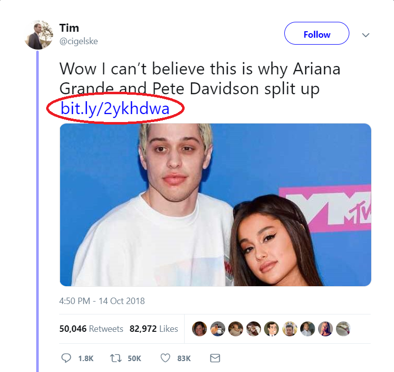
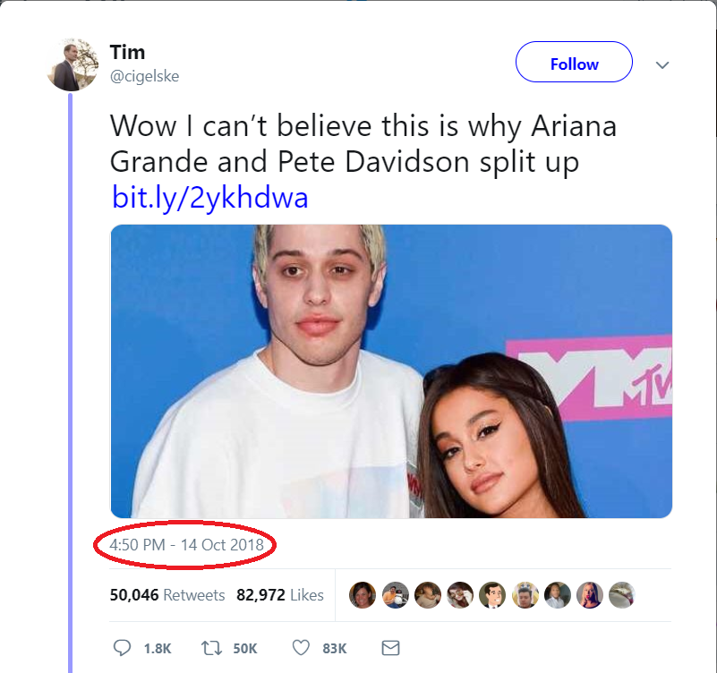
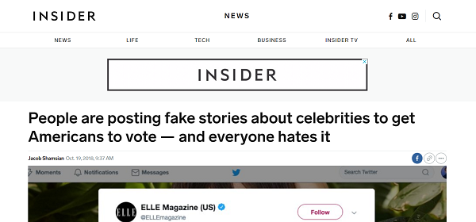

The creator of this post, Tim, is an unreliable source because he does not work for a big company like New York Times or Washington Post. Instead, he works for Buzzfeed. There was no proof for his claim that Ariania Grande and Pete Davidson broke up. Click here to visit his twitter account.
2)External Link:
When you click on the link in the post, it takes you to a voting page. This is clear evidence that this is fake news because Tim used this post as a way for people to vote for the American election. Click here to visit the voting page.


3)Date:
Right now, even though they broke up at around mid November, at the time of the post, Tim claims that they broke at around that day. This alone is clear evidnece this this is fake news.
4)Additional Research:
Several people made social media posts similar to the one above to get people to vote in the upcoming American election. This is proven by several media groups like the Insider(part of Insider Business). This is a clear evidnence as for why this post is fake news.

Here are some practice social media posts. Not all of them are fake, so don't assume that they are all fake.